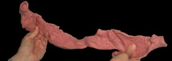
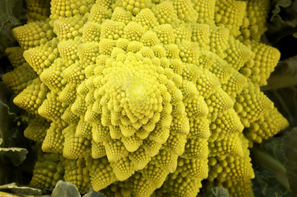
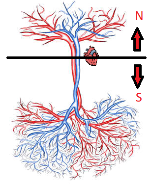

Today’s article will be about the Circadian Rhythms of our body. How our body anatomically programs Energy, Frequency and Vibration. In this article we will continue to look through a 12 channel meridian perspective, following its cyclical flow.
How can infinite waveforms co-create with each other in continuous harmony? What does this wave look like? How does our body create it? And how can it be seen within the perspectives of Chinese Medicine and the meridian systems?
As we string these parts and pieces together, the first aspect we need to bring awareness to is the formation of our Helical Heart. Gathering from the works of Dr. Gerald Buckberg an American heart surgeon and other pioneering heart specialists, we have re-discovered that our heart is actually one long muscle strand that has twisted and spiraled into each other,
in the shape of a cosmic toroidal doughnut. Our heart is a muscle band that has formed in the shape of the golden spiral or Phi (1.618…). Our hearts have grown physically and energetically into the shape of the Galaxy and Universe.
In this form our hearts have infinite capacity for squeezing and compression. This is extremely important and what makes the heart very unique compared to all of our other organs within the body. This squeezing creates implosive energy. As we create different emotions, each different emotion creates its own unique waveform. When we are experiencing love — which is a very coherent sine wave because it encapsulates all other types of
emotions into one, our heart generates perfect
golden ratio spiraling sine waves.
As shown in the picture above, when we maintain these soundwaves, sine waves, the heart frequency of love, we set the frequency and the charge in motion in our blood to carry this heart song, like a resonant tuning fork to all other aspects of our body. Depending on how out of resonance with this frequency all other parts of the body are, this will determine how far this sound wave will travel through the body before it is dissipated from interference. (like Whale who sings its song and who has the largest heart on Earth)
The heart will communicate through the blood vessels, The blood vessels are the heart’s domain, it commands the blood. If you are familiar with my 12 channel meridian continuum work you will know that the heart blood will travel in two general directions. One part will travel upwards toward Heaven and into the vicinity of the brain, and a second part will travel downwards towards Earth, to explore, experience and conquer.
The Liver’s job is to complete the finalization of the blood, the purification process before the circulated blood returns back to the heart. If we are physically out of tune with our Destiny, Purpose & Plan for this life, we will begin to see the circulating blood that is above our heart become out of coherence with the circulating blood that is below our heart. Our hemispheres of blood will be out of resonance with each other and not be able to provide a systematic wide frequency blueprint.
We already need a brief recap. If all cylinders within the body are firing properly in a coherent circulating rhythm, our lungs (breath) will be tuning the speed of our heart –> our heart love frequency (our heart beat in natural circadian rhythm with galaxies and universes) if we are radiating love, we will be creating the perfect sine wave for infinite compression without interference. Our heart song ( a phononic soundwave) will travel through the liquid of our blood, programming the circadian rhythm by tuning the frequency and firing rate of all of our cells and bodily functions.
If the heart song (phononics) from the heart vessels circulating through the body enter the brain, they will program the firing rate/frequency of the heart to be in synchronicity with the ventricles and cerebrospinal fluid of the brain. Afterwards the resonant CSF fluid will then travel down the spinal column in a harmonious nature with the heart. Doing this we will have achieved Heart and Mind coherence.
As the Cerebrospinal Fluid (also called commonly called Craniosacral Fluid in craniosacral therapy) travels down the spinal cord carrying our heart song. This resonant frequency will also ‘tune” / program the fibers and cells of the peripheral nervous system, which cyclically follows a pathway from the central nervous system. This means that we will be programming our sympathetic and parasympathetic system and all nervous aspects of our body.
Our nervous system contains our subconscious thoughts and waveforms. That which we use to engage in functions without our direct awareness. These subsconscious waveforms can be acting on both physical functions, such as programming the body’s breathing or digestion. Or acting on our nervous system which can subconsciously create programs for the dreaming body, astral body or our energy bodies, so that we can make programs to travel into other dimensions and make co-creations. Aware or unaware.
By bringing our heart song, which is our phononic waveforms carried within our blood into our nervous system via our cerebrospinal fluid, we begin to bring consciousness to the subconscious areas of our body. This is how we eradicate subconscious or unconscious personal, social, or ancestral programming from our body. We do this with our awareness, energy, frequency and vibration. We must do this out of a state of joy and not as a tedious process.. It is at this point where we can intentionally reprogram our body mechanics the way that we want to. We can remove some of the age old accumulated junk that is running an OS software that is 1000’s of generations out of date.
The trick is to maintain joy, happiness and love within our lives. To find joy in our menial moments, out-creating our subconscious programming. As we do this process we are achieving coherence with all circadian rhythms, therefore connecting all anatomical aspects of our bodies to run in coherence and unison.
If we are maintaining the frequency of love, we are naturally in a rhythmic procession with the frequency of the Earth, which is the Schumann Resonance. Yet we also come into coherence with all other galactic and universal cycles of time keeping. With continuous effort and repetition we create self illumination. We increase our density within this world and we sing in union with the stars and planets of this universe without any interference.
Following this blueprint you will also be able to integrate all body systems of the meridian cycle that I left out. I left them for the sake of simplicity for this article. Just self-investigate and see how they individually can imprint into the blood. You will be able to integrate the Large Intestine, Stomach, Spleen, Small Intestine, Triple Heater, Gallbladder, and all other systems by directly investigating how it influences the blood. (Ex, how the microbiotics of the stomach, large and small intestine etc digest nutrients which influence the blood)
The heart when connected to the love frequency creates the golden ratio spiral as a waveform. This waveform creates a vortex within the heart as the heart energetically compresses all perfectly spiralled waveforms into a plasmoid, a singularity, or a point in no-time. This is where the heart is in connection with all that there is, was and ever will be. Thoughts and ideas become self organized. Here we are connected to all matter in a mathematical expression. It is a quantum expression.
t is only the waveform of Phi that allows infinite numbers of sine waves to be connected and nest within each other without any interference patterns. This allows for infinite co-creativity. This is what the heart does, and this allows us to never step on the journey of others. We each have our individual playground of infinite space.
With heart intention and joy we can program all aspects of our bodies circadian rhythm to be functioning in coherence and unison with each other. We rhythmically become in tune with the plants, animals, insects and all other people. Including other planets, other galaxies and universes. All we have to do is tune in and enjoy ourselves and not be a stubborn stick in the mud.
Lungs – Breath tunes the → Heart rhythm tunes all the → Blood Vessels → enter brain, phase lock with ventricle fluid → wave enters Corpus callosum, connecting L&R brain hemispheres non destructively creating a nesting wave → Phase locked vibrating fluid travels down the spine as CSF into the nerve endings → transforming subconscious programming / interference programs = can no longer exist.
*See the work of Dan Winter to further understand the geometry, magnetic electrical engineering, physics and mathematics of how the golden sine wave as Phi mathematically allow all waves to join each other.